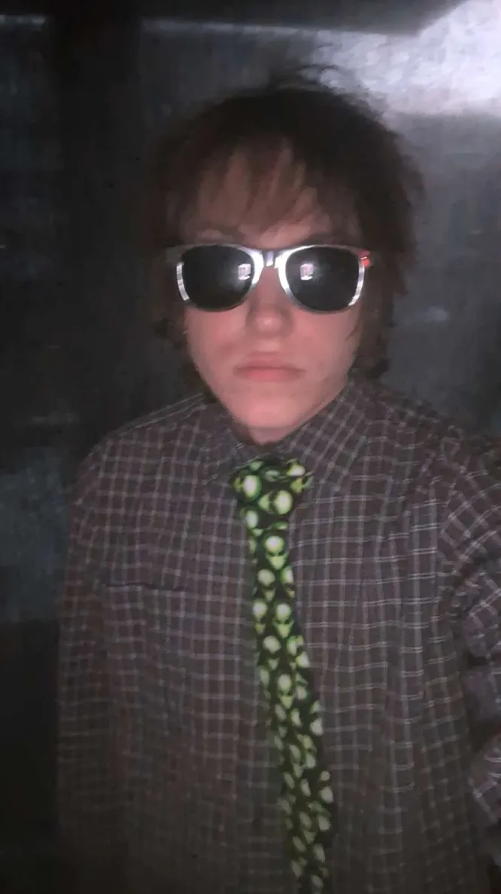

Mit navn er Lukas Sand
Jeg hedder Lukas og er startet på multiemediedesigner uddannelsen på Erhvevsakademi København i sommers.
Her har jeg lært om grafisk design, webudvikling, branding og meget mere indenfor det digitale medie.
Jeg har altid haft en interesse for det kreative og forskellige måder at udtrykke sig på, for eksempel film, kunst og musik. Grafisk design er en vej, jeg ikke havde overvejet før, som nu har åbnet sig op for mig og lader mig træne disse interesser.
Min tidligere erhvervserfaring er som butiksassistent i bl.a. JYSK sengetøj og 7-Eleven.